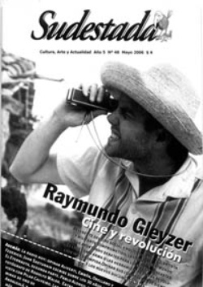

Buscar
Raymundo Gleyzer: Cine y revolución
El 27 de mayo de 1976 Raymundo Gleyzer fue secuestrado por un grupo de tareas. De esta forma la dictadura intentó silenciar a uno de los más talentosos y coherentes referentes del cine social latinoamericano. Una mirada interior a la vida de este cineasta revolucionario que centró su lucha en la liberación política de la clase trabajadora. Opinan su compañera de toda la vida, Juana Sapire; Nerio Barberis; Humberto Ríos y de la nueva generación de cineastas, Ernesto Ardito, Virna Molina y Mariana Arruti.
Edición N° 48
Mayo 2006
Revista bimensual
Comprar edición impresaSumario
- Raymundo Gleyzer: Cine y revolución
- Los ojos de Rodolfo Walsh
- El negocio siempre cierra
- Días de radio
- Las vueltas de un Eternauta
- Las minas de Andalgalá: Las montañas son nuestras, el oro ajeno
Compartir Articulo
Su mente y su pensamiento se clarificaban a medida que los hechos acontecían. Sus ojos claros, estaban más claros que nunca, le reflejaban casi con transparencia el camino a seguir. No se planteaba fácil la cosa, hacía tiempo que la dificultad era parte del paisaje, eso no lo incomodaba, al contrario, ya se había acostumbrado a la censura, a la clandestinidad y a otras complejidades. Estos avatares daban la pauta que el rumbo tomado no era equivocado. Raymundo se sentía seguro, una vez más sentía que le palpitaba la mano, la mano derecha picaba, parecía una paradoja, pero siempre le picaba ésa. Reía solo, estaba tranquilo, seguro. Era un buen signo. Sabía que la situación política se tornaría cada vez más vertiginosa, las decisiones a tomar debían ser sumamente elaboradas, correctas. Sabía que esta decisión no tenía vuelta atrás. Pero no iba a titubear. No lo había hecho nunca. Mucho menos ahora.
A esta altura de su vida sentía que los debates políticos e intelectuales sobre el cine, la estética y sobre el arte en general lo exasperan. Luego de un importante recorrido cinematográfico y con varias películas a cuestas, se dio cuenta que no le interesaba en lo más mínimo ser un teórico en materia cinéfila. Su fuerte estaba en la práctica, en la acción, en los hechos concretos, en la praxis. Y, no tanto en las conceptualizaciones teóricas sobre este campo. Eso no le gustaba. Raymundo prefería actuar, internarse en el propio ámbito donde había que filmar, ahí donde vive la gente, ése era su campo específico. Prefería estar, verlo con sus propios ojos, no discernir sobre las posibilidades y los alcances teóricos del cine, o las tantas y aburridas fundamentaciones académicas sobre el lenguaje cinematográfico en el marco de una charla de café. Eso lo odiaba. Sabía esto, lo supo hace mucho tiempo atrás, desde el momento en que decidió abandonar la carrera de Cine en la Universidad de La Plata porque sentía que perdía el tiempo. Se dio cuenta que para hacer cine no hacía falta continuar con la carrera. Y mucho menos un cine que se proponga indagar acerca de la problemática social latinoamericana. En su viaje al nordeste de Brasil y el contacto con la gente del Sertao Brasilero, aprendió mucho más que en la Universidad. La tierra quema confirmó varias de sus hipótesis sobre el cine documental, crítico y de denuncia que pretendía como realizador. La Tierra Quema marcó el camino y también le sirvió para ver otro de los tantos tentáculos del monstruo a combatir, de ese enemigo: el imperialismo y sus estructuras nacionales en Latinoamérica. Diferentes caras y facetas de un mismo fenómeno, similar y a la vez diferente al que había filmado en Nuestras Malvinas.
Su experiencia como ¿cineasta?, como ¿artista? -¿había otra manera para autodesignarse?-, le indicaba que pese a su estado de ánimo no debía restar importancia al debate de ideas, porque siempre podía salir a la luz algo nuevo, algo interesante, pero cómo le costaba. ¿Era necesario, con todos los desastres que sucedía en Argentina y en el mundo…?
Más que nunca consideraba vital e indispensable que las discusiones intelectuales estuvieran focalizadas y proyectadas en post de un proyecto político concreto. Revolucionario. De lo contrario, estos discursos formarían parte de la vasta literatura superflua que se escribía a diario. Y eso no le importaba. No era el momento. Entre sus papeles, encuentra algunos periódicos, hay fechas….
Es consciente que el exceso teórico en este momento particular puede provocar un desfasaje peligroso, muy peligroso con el destinatario del mensaje: El pueblo, la clase obrera. Consideraba que era el momento de tomar el pulso a la situación, al problema. Y el interrogante se desprendía de inmediato. ¿Cómo? ¿De qué manera lograr este acercamiento? Nuevamente la incansable e interminable discusión entre forma y contenido asomaba, y con ella tomos y tomos de teoría marxista que sin pedir permiso se acomodaban entre su bibliografía. ¡Qué curioso!, se da cuenta que quizá la respuesta a tan intrincado debate materialista, filosófico y cuasi científico, sea muy simple. ¡Qué interesante!, se dice a si mismo y sonríe. De inmediato se rascó la palma de la mano y apuntó con un entusiasmo notable la consigna a seguir. Escribió la frase, simple pero reveladora: Llevar el cine a la gente. Limitar los debates abstractos y encarar otra etapa. Poner el cuerpo y mantenerse firme, llevarla a cabo, pase lo que pase.
Esta consigna tan breve pero contundente atrapaba casi en su totalidad la ideología y el pensamiento actual de Raymundo Gleyzer y de sus compañeros del grupo de Cine de la Base que se encontraba a tono con este pragmatismo radicalizado. Y bajo esta voluntad de realismo crítico, el grupo desarrollará su tarea. Sabe que desde diferentes sectores lo atacarán de simplista y reduccionista. No le importa. Los tiempos urgen, y hay que actuar. Sabe que la claridad del mensaje no implica ni representa menor rigurosidad artística en el contenido. Todo lo contrario. La elección del relato y la narración "clásico" en función de un mensaje llano, era la propuesta a trabajar pero sin desmerecer la belleza ni la complejidad formal del mismo. Esto lo tenía claro, en el arte lo bueno perdura.
El asunto era y es, sin tantos rodeos, llegar de la forma más directa a ese hombre común que cumple día a día con una rutina alienante. Había que llegar superando los límites propios del artista o intelectual pequeño-burgués. Y ésta sí que era una dura tarea, un gran desafío. También de todos los días. Entendió que como cineasta debía romper con la vocación individualista y autosuficiente innata de todo artista, y más aún del artista de cine culto. Había que proyectar el trabajo colectivo. Acto seguido añadió: "Quién pretendiese realizar un cine revolucionario o que intente romper las estructuras de dominación actuales, debía actuar bajo la contención de una organización política, un partido que luche por la toma del poder". Y una organización política que contenga una estructura sólida de distribución para llegar a la base. Había que asegurarse por los distintos medios y canales para expandir el mensaje. Mientras escribía esto pensaba internamente que esto último era una ¡bajada de línea feroz!, que podía sonar muy duro, para quien lo leyera, demasiado esquemático, cuadrado y sumamente ortodoxo. ¡Puede que sí!, pero no concebía otra forma para esta coyuntura. Pero sólo él sabía los motivos que lo empujaron a trazar semejante dureza discursiva. ¿Planfletaria? El panfleto artístico y bien elaborado nunca le desagradó. Al contrario. Sentía que al final del camino se lo comprendería, porque los mismos hechos históricos respaldaban esta posición....
La nota completa en la edición gráfica de Sudestada Nº48
Comentarios
Jaime Galeano
Articulos más vistos


LIBRERÍA SUDESTADA

Colección infantil

Distribuidora de Libros

Suscripción

Sudestada en URUGUAY

Otros articulos de esta edición
 En la calle
En la calle
Las minas de Andalgalá: Las montañas son nuestras, el oro ajeno
Andalgalá es la tercera ciudad en importancia de Catamarca. Desde hace diez años allí funciona una de las minas de ...
 Antihéroes
Antihéroes
Los ojos de Rodolfo Walsh
Detrás de aquel cronista inolvidable, resuelto a recorrer los rincones más ocultos de la geografía argentina, había un fotógrafo que ...
Días de radio
La radio hoy atraviesa una crisis que va desde la producción periodística hasta sus protagonistas, de las pocas ideas a ...
Las vueltas de un Eternauta
Polémica como pocas historietas, la segunda parte de El Eternauta dibuja el relieve de la transformación política y personal de ...
El negocio siempre cierra
La exposición del escritor Tomás Eloy Martínez en la inauguración de la última edición de la Feria del Libro ...